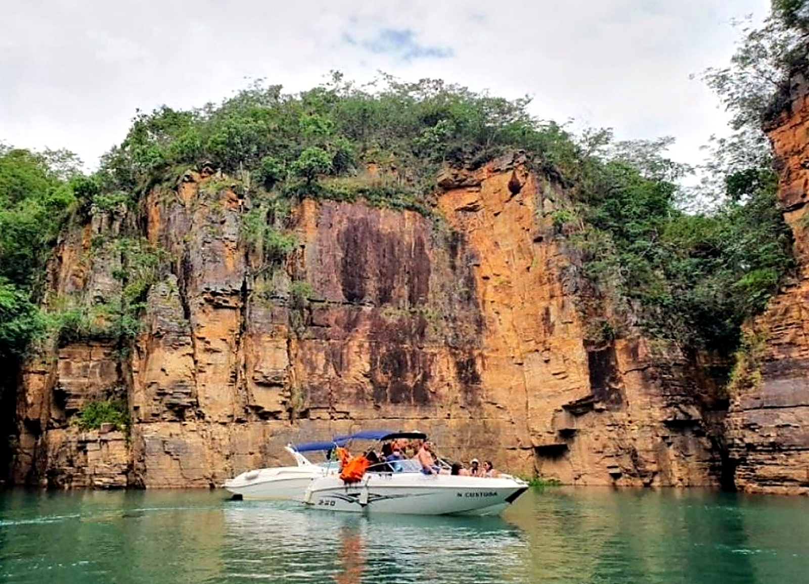

Cânions de CapitólioLagoa AzulVale dos TucanosLancha Privativa & CompartilhadaPasseio de Barco e EscunaPonte do Rio Turvo · KM 306Empresa CredenciadaCânions de CapitólioLagoa AzulVale dos TucanosLancha Privativa & CompartilhadaPasseio de Barco e EscunaPonte do Rio Turvo · KM 306Empresa Credenciada
Roteiro pelo Lago de Furnas
Os cartões-postais de Capitólio.
Saída oficial da Ponte do Rio Turvo (Recanto Só Nata) com paradas para banho e fotos.
⚓
EmbarquePonte do Rio Turvo
01
CânionsParedões e cachoeiras
02
Lagoa AzulPiscina e bar flutuante
03
Vale dos TucanosÁguas super calmas
Parada 01
🪨 Paredões de 20m🏊 Parada p/ banho
Cânions de Capitólio
Navegação entre paredões gigantes, quedas d'água cristalinas e parada para mergulho com coletes e flutuadores.
Parada 02
🍹 Bar flutuante💦 Cachoeira
Lagoa Azul
Água translúcida com cachoeira, piscina natural e bar flutuante para drinks, porções e fotos.
Parada 03

🌊 Sem correnteza👨👩👧 Ideal p/ família
Vale dos Tucanos
Enseada abrigada de águas super calmas, perfeita para nadar com crianças e relaxar em família.
Simulador Rápido
Monte seu passeio sob medida.
Escolha a embarcação, paradas e pessoas para enviar pronto no WhatsApp.
Adultos
2
Crianças
0
Pets 🐾
0
Estrutura Completa
Lancha, barco ou escuna para o seu grupo.
M&M Passeios Náuticos · Márcio e Marcelo
Empresa regularizada em Capitólio com marinheiros experientes, som a bordo e atendimento ágil pelo WhatsApp.